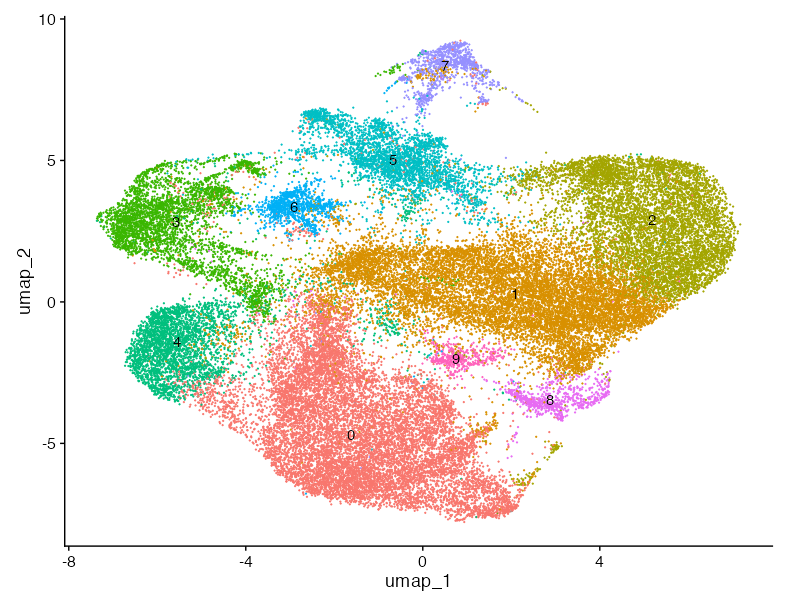

Code
library(qs2)
library(Seurat)
library(patchwork)
library(tidyverse)
library(DESeq2) # needed by FindAllMarkers(test.use = "DESeq2") in eval:false chunks
library(jsonlite)Identification of Astrocyte subpopulations after subsetting and reclustering
library(qs2)
library(Seurat)
library(patchwork)
library(tidyverse)
library(DESeq2) # needed by FindAllMarkers(test.use = "DESeq2") in eval:false chunks
library(jsonlite)# genes to remove #########################################################
# Load gene list and extract CELL SPECIFIC markers (excluding ASTROCYTE)
gene_list <- read_json("results/Xenium_Final_Gene_List_Updated_20260220_corrected.json")
cell_specific <- gene_list[["CELL SPECIFIC"]]
cell_specific[["ASTROCYTE"]] <- NULL
# One row per gene with cell_type label
markers <- map_dfr(names(cell_specific), function(ct) {
tibble(cell_type = ct, gene = unlist(cell_specific[[ct]]))
}) |>
pull(gene)
### genes manually selected by Akhil ###
akhil <- c(
"Tmem119", "Aif1", "Trem2", "P2ry12", "Ermn", "Cldn11", "Mog",
"Ccdc153", "Dnah11", "Tmem212", "Pdgfra", "Tnr", "Mgp", "Bgn",
"Slc47a1", "Acta2", "Tagln", "Vtn", "Kcnj8", "Atp13a5", "Flt1",
"Emcn", "Cldn5", "Car12", "Ttr", "Col1a2", "Lum", "Dcx", "Pax6",
"Mgl2", "Mrc1", "Cd3d", "Gzmb", "Pdcd1", "Klrb1c", "Tpsab1",
"Tpsb2", "Fcer1a", "Plac8", "Msr1", "Ly6g", "Camp", "Cd209a",
"Clec10a", "Cd247", "Snap25", "Grin2a", "Grin2b", "Cux2", "Otof",
"Stard8", "Lypd1", "Lrg1", "Adamts2", "Macc1", "Rapgef3", "Rorb",
"Tcap", "Hsd11b1", "Rspo1", "Whrn", "Tunar", "Osr1", "Oprk1",
"Pou3f1", "Tshz2", "Tox2", "Syt6", "Trh", "Vip", "Calb2", "Pthlh",
"Crh", "Gad1", "Serpinf1", "Cnr1", "Lhx6", "Slc32a1", "Slc17a7",
"Fezf2", "Htr2c", "Dpp4", "Slc17a6", "Siglech", "Clec7a", "Lyz2",
"Cd14", "Cst7", "Pf4", "Nkg7", "Cx3cr1", "Itgax", "Cd68", "Mbp",
"Mag", "Pllp", "Lamp5", "Nts", "Tac1", "Sncg", "Sst", "Calb1",
"Ndnf")
# setdiff(akhil, markers)Removed cell markers Tmem119, Aif1, Trem2, P2ry12, Ermn, Cldn11, Mog, Ccdc153, Dnah11, Tmem212, Pdgfra, Tnr, Mgp, Bgn, Slc47a1, Acta2, Tagln, Vtn, Kcnj8, Atp13a5, Flt1, Emcn, Cldn5, Car12, Ttr, Col1a2, Lum, Dcx, Pax6, Mgl2, Mrc1, Cd3d, Gzmb, Pdcd1, Klrb1c, Tpsab1, Tpsb2, Fcer1a, Plac8, Msr1, Ly6g, Camp, Cd209a, Clec10a, Cd247, Snap25, Grin2a, Grin2b, Cux2, Otof, Stard8, Lypd1, Lrg1, Adamts2, Macc1, Rapgef3, Rorb, Tcap, Hsd11b1, Rspo1, Whrn, Tunar, Osr1, Oprk1, Pou3f1, Tshz2, Tox2, Syt6, Trh, Vip, Calb2, Pthlh, Crh, Gad1, Serpinf1, Cnr1, Lhx6, Slc32a1, Slc17a7, Fezf2, Htr2c, Dpp4, Slc17a6 and Akhil´s hand-picked genes Siglech, Clec7a, Lyz2, Cd14, Cst7, Pf4, Nkg7, Cx3cr1, Itgax, Cd68, Mbp, Mag, Pllp, Lamp5, Nts, Tac1, Sncg, Sst, Calb1, Ndnf
# Load seurat with subsetted astrocytes object
full <- qs_read("seurat_objects/20260217_Part2_fullobj.qs2")
astro_subset <- subset(full, subset = annotatedclusters == "Astrocyte")
genes_to_remove <- akhil
all_features <- Features(astro_subset)
keep_genes <- all_features[!all_features %in% genes_to_remove]
astro_cleaned <- subset(astro_subset, subset = seurat_clusters!=6)
astro_cleaned <- subset(astro_cleaned, features = keep_genes)
# Keep only the assay needed for fresh SCTransform
DefaultAssay(astro_cleaned) <- "Xenium"
astro0 <- DietSeurat(astro_cleaned, assays = "Xenium", dimreducs = NULL, graphs = NULL)
# Drop Xenium image/FOV segmentation data; otherwise merge triggers huge future globals
# astro0@images <- list()# SCTransform on all astrocytes together (no split/merge, no integration)
astro <- SCTransform(
astro0,
assay = "Xenium",
new.assay.name = "SCT",
verbose = FALSE
)## Log-normalised alternative
# Log-normalise, find variable features, and scale
astro_log <- NormalizeData(astro0, normalization.method = "LogNormalize", scale.factor = 10000)
astro_log <- FindVariableFeatures(astro_log, selection.method = "vst", nfeatures = 2000)
astro_log <- ScaleData(astro_log, features = VariableFeatures(astro_log))
# PCA, neighbours, clustering, UMAP
set.seed(1234)
astro_log <- RunPCA(astro_log, features = VariableFeatures(astro_log), verbose = FALSE)
astro_log <- FindNeighbors(astro_log, reduction = "pca", dims = 1:15)
astro_log <- FindClusters(astro_log, resolution = 0.3)
astro_log <- RunUMAP(astro_log, reduction = "pca", dims = 1:15, verbose = FALSE)
DimPlot(astro_log, label =T, label.size = 6, pt.size =0.9)+ NoLegend() +
ggtitle("Removed cluster 6 and 103 marker genes\nLog-normalized")
# qs_save(astro_log, "seurat_objects/20260318-astro_lognorm_0.3.qs2")DefaultAssay(astro) <- "SCT"
astro <- RunPCA(
astro,
assay = "SCT",
features = VariableFeatures(astro),
verbose = FALSE)
set.seed(1234)
# graph.name keeps the SNN graph separate from any pre-existing graphs
astro <- FindNeighbors(astro, reduction = "pca", dims = 1:30, graph.name = "astro_snn")
astro <- FindClusters(astro, graph.name = "astro_snn", resolution = 0.3)
astro <- RunUMAP(astro, reduction = "pca", dims = 1:30, verbose = FALSE)
# Relabel seurat_clusters with biological names
astro$seurat_clusters <- fct_recode( astro$seurat_clusters,
" Lipid Biosynthesis" = "0",
"Metabolic" = "1",
"DAA" = "2",
"LARA" = "3",
"DAM Associated" = "4",
"Metabolic Reactive Astrocyte" = "5",
"IRRAs" = "6",
"BBB/Vascular Astrocytes" = "7")
## save cleaned object
# qs_save(astro, "seurat_objects/20260318-astro_cleaned2_0.3.qs2")astro <- qs_read("seurat_objects/20260318-astro_cleaned2_0.3.qs2")
# swap to log-normalised version when ready:
# astro <- qs_read("seurat_objects/20260318-astro_lognorm_0.3.qs2")# Cluster palette borrowed from Chloe's microglia colour scheme so the two
# reports read as a coherent pair. IRRAs is anchored to the IRM hex.
astro_cluster_palette <- c(
" Lipid Biosynthesis" = "#A6CEE3",
"Metabolic" = "#1F78B4",
"DAA" = "#FDBF6F",
"LARA" = "#FF7F00",
"DAM Associated" = "#33A02C",
"Metabolic Reactive Astrocyte" = "#FB9A99",
"IRRAs" = "#E31A1C",
"BBB/Vascular Astrocytes" = "#6A3D9A")# Elbow plot to visualise variance explained per PC
ElbowPlot(astro, ndims = 50) +
geom_vline(xintercept = 30, linetype = "dashed", color = "red") +
labs(title = "Elbow plot") +
theme_minimal()
# PCA biplots coloured by sample and treatment
p1 <- DimPlot(astro, reduction = "pca", group.by = "Slide") +
labs(title = "PCA — Slide")
p2 <- DimPlot(astro, reduction = "pca", group.by = "Treatment.Group") +
labs(title = "PCA — Treatment")
p1 + p2
resolution = 0.3


#|fig-height: 5
#| label: plot UMAPs 1
Idents(astro) <- astro$seurat_clusters
DimPlot(astro, label = FALSE, label.size = 6, pt.size = 0.6,
cols = astro_cluster_palette) +
ggtitle("Removed cluster 6 and 103 marker genes")
DimPlot(astro, split.by = "Treatment.Group", label.size = 6,
pt.size = 0.6, cols = astro_cluster_palette) +
NoLegend()
FindAllMArkers run on log-normalized residual expression values from SCTransform in the SCT assay (Values are continuous and typically centered around 0)
DefaultAssay(astro) <- "SCT"
all_markers <- FindAllMarkers(astro, only.pos = TRUE, densify = TRUE)
# write_csv (only marker genes removed)
# write_csv(all_markers, file = "results/20260309-astrocyte_cleaned_all_markers_0.3.csv")
#################################################################
# write_csv (cluster 6 from the original object & marker genes removed)
# write_csv(all_markers, file = "results/20260312-astrocyte_cleaned_all_markers_0.3.csv")
#################################################################
# write_csv (cluster 6 from the original object & marker genes + Akhil genes removed)
# write_csv(all_markers, file = "results/20260318-astrocyte_cleaned_all_markers_0.3.csv")
write_csv(all_markers, file = "results/20260318-astrocyte_cleaned_all_markers_0.3_logtrans.csv")source("20260217-helper_functions.R")
# Top 5 markers per cluster by avg_log2FC
top_genes <- read_csv("results/20260318-astrocyte_cleaned_all_markers_0.3.csv",
show_col_types = FALSE) |>
group_by(cluster) |>
arrange(desc(avg_log2FC), .by_group = TRUE) |>
slice_head(n = 5) |>
pull(gene) |>
unique()
fiddle(astro,
genes_of_interest = top_genes,
classification_col = "seurat_clusters",
assay = "SCT")
Based on the top 5 marker genes per cluster, we assessed whether each cluster represents true astrocytes or contaminating cell types from the initial subsetting.
FeaturePlot(astro,features = c("Aldh1l1", "Aldoc", "Gfap", "Slc7a10", "Aqp4"), ncol=2, min.cutoff = "q20")
VlnPlot(astro,features = c("Aldh1l1", "Aldoc", "Gfap", "Slc7a10", "Aqp4"),alpha = 0, ncol=2)